| Image | | | | | Summary |
 | 123 (KB10-S) v1 | asymmetric D | manual | nose stopped - boss | japanese 10mm steel screwlock |
| 123 KB10-S v2 | asymmetric D | manual | nose stopped - boss | japanese 10mm steel screwlock |
 | A5 Grade VI (signed) | oval | n/a | n/a | SMC whitelabel produced carabiner for A5 (and signed by John Middendorf) |
| 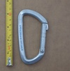 | ABC (straight gate) | asymmetric D | n/a | n/a | keylock carabiner, whitelabel for ABC by KONG |
 | AustriAlpin (Steel HMS) (reverse notch & window) | HMS | manual | gate stopped - gate stop | unique reverse notch & hole gate, plastic threads |
 | AustriAlpin Eleven ID Screwlock | asymmetric D | manual | gate stopped - gate stop | modern workhorse carabiner with host of features: unique ID# semi-guarded nose, thick locking sleeve, ring-dimpled rivets |
 | AustriAlpin Ovalo GI Screwlock Brass Sleeve | offset oval | manual | gate stopped - gate stop | heavy workhorse oval-ish with modern features |
 | AustriAlpin Rondo HMS Slide Lock | HMS | full-auto | slide | slidelock/pivot lock |
 | AustriAlpin Stratus | trapezoid | full-auto | slide | paragliding carabiner, anti-crossloading spine spur |
 | AustriAlpin Sym Oval Clawlock Screwgate v1 | oval | manual | nose stopped - unknown | clawlock nose, nose-stopped locking sleeve |
| BONAITI (D screwlock) (round sleeve) | D | manual | nose stopped - rotational interferance | early screwlocker with unique nose-stop mechanism |
| 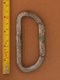 | BONAITI (D) (2200) | D | n/a | n/a | vintage symmetric D with slight nose |
 | BONAITI (D) (2500) | D | n/a | n/a | vintage symmetric D with slight nose |
| BONAITI (D) (Screwlock) | D | manual | nose stopped - longitudinal interferance | nose-stopped D screwlock |
| BONAITI (Oval Screwlock) | oval | manual | nose stopped - longitudinal interferance | nose-stopped oval screwlock |
| Beal Be Quick | asymmetric D | manual | gate stopped - unknown | lightweight screwlocker |
 | BetaBiner (D Locking) | D | manual | nose stopped - longitudinal interferance | locking d by iconic brand |
| Black Diamond Mini Pearabiner (v2) | HMS | manual | gate stopped | typical HMS screwgate |
 | Black Diamond Mini Pearabiner v1 | HMS | manual | gate stopped | classic HMS |
 | Black Diamond Mini Pearabiner v1b | HMS | manual | gate stopped | basic HMS |
| 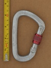 | Black Diamond (Unknown Big D) | asymmetric D | manual | gate stopped - snap-ring | robust large asymmetric d |
| Black Diamond Airlock Bayonet | S-spine | assisted | lift-and-twist | spring-powered manual locking mechanism |
| Black Diamond Airlock Screwgate (1997) (flat seat) (red sleeve) | S-spine | manual | nose stopped - longitudinal interferance | early BD tapered sleeve |
 | Black Diamond Airlock Screwgate (1997) (recessed seat) (green sleeve) | S-spine | manual | nose stopped - longitudinal interferance | early BD tapered sleeve |
 | Black Diamond Airlock Screwgate (≤1996) | S-spine | manual | nose stopped | early s-spine HMS |
 | Black Diamond Airlock2 Twistlock | HMS | full-auto | twist | basic twistlock from the dawn of the modern era of autolocks |
| Black Diamond Big D | asymmetric D | manual | hinge stopped | threaded sleeve blocks the hinge rather than nose |
 | Black Diamond Big Easy Bent Gate | asymmetric D | n/a | n/a | narrowed spine permits gate/spine overlap |
 | Black Diamond Big Easy Screwgate | asymmetric D | manual | nose stopped - longitudinal interferance | compact locker | narrowed spine permits gate/spine overlap |
 | Black Diamond Dynotron v1 | bent spine | n/a | n/a | channelized gate |
 | Black Diamond Enduro (v1) | asymmetric D | n/a | n/a | with quicksilvers, shows evolution of carabiner manufacturing |
 | Black Diamond Enduro v1 | asymmetric D | n/a | n/a | with quicksilvers, shows evolution of carabiner manufacturing |
 | Black Diamond Enduro v2 | asymmetric D | n/a | n/a | with quicksilvers, shows evolution of carabiner manufacturing |
 | Black Diamond Enduro Screwgate | asymmetric D | manual | gate stopped | with quicksilver & positron screwlocks demonstrates evolution of BD compact lockers |
 | Black Diamond GridLock Magnetron | hourglass | full-auto | simul-press | anti-crossloading belay carabiner paired with an inappropriate locking mechanism |
 | Black Diamond GridLock Screwgate | hourglass | manual | gate stopped | iconic belay carabiner with anti-crossloading feature |
 | Black Diamond HoodWire | asymmetric D | n/a | n/a | original wire-guarded clean nose wiregate |
 | Black Diamond HotWire v2 | asymmetric D | n/a | n/a | the original climbing wiregate |
| Black Diamond Ice Clipper v1 | asymmetric D | n/a | n/a | early harness mounted tool carabiner |
 | Black Diamond JiveWire | asymmetric D | n/a | n/a | poor quality accessory carabiner from BD |
| 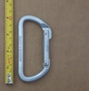 | Black Diamond Light D (v1) | D | n/a | n/a | Classic Symmetric D |
 | Black Diamond Light D (v2) | D | n/a | n/a | Classic Symmetric D |
| 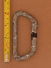 | Black Diamond Light D (v3) | D | n/a | n/a | Classic Symmetric D c. 2003 |
| Black Diamond Light D Locking | D | manual | hinge stopped | hinge lock version of the Light D |
 | Black Diamond LiteForge Screwgate | asymmetric D | manual | gate stopped | BD's lightweight screwgate |
 | Black Diamond LiteWire | asymmetric D | n/a | n/a | representative of BD's modern production methods |
 | Black Diamond LiveWire v1 | bent spine | n/a | n/a | full-sized wiregate, forged grip-aid on spine |
 | Black Diamond LiveWire v2 | bent spine | n/a | n/a | wire-guarded snagless nose, forged grip aid on spine |
 | Black Diamond Micron | asymmetric D | n/a | n/a | quality accessory carabiner |
 | Black Diamond Neutrino (I-beam) | asymmetric D | n/a | n/a | redesign of iconic compact/racking carabiner |
 | Black Diamond Neutrino (T-beam) | asymmetric D | n/a | n/a | iconic compact/racking carabiner |
 | Black Diamond Oval (c-diamond) (kN -USA) | oval | n/a | n/a | classic BD oval |
 | Black Diamond Oval (c-diamond) (kg) | oval | n/a | n/a | classic BD oval |
 | Black Diamond Oval (double diamond) (18/7/6) | oval | n/a | n/a | late generation cold-forged BD oval |
 | Black Diamond Oval (double diamond) (18/7/7) | oval | n/a | n/a | late generation cold-forged BD oval |
| Black Diamond Oval Keylock Screwgate | oval | manual | gate stopped | lightweight oval |
| 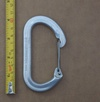 | Black Diamond OvalWire | offset oval | n/a | n/a | lightweight take on a classic(ish) shape |
 | Black Diamond Oz v1 | asymmetric D | n/a | n/a | ultralight wiregate, flat profile |
 | Black Diamond Oz v2 | asymmetric D | n/a | n/a | wire-guarded clean nose wiregate, ultra light |
 | Black Diamond Oz v2 (factory second) | asymmetric D | n/a | n/a | wire-guarded snagless wiregate, ultra light |
 | Black Diamond Pearabiner (1990+) v1 | HMS | manual | hinge stopped | threaded sleeve blocks the hinge rather than nose |
 | Black Diamond Pearabiner (1990+) v2 | HMS | manual | hinge stopped | early BD carabiner, hinge blocked screwgate |
 | Black Diamond Positron Screwgate | asymmetric D | manual | gate stopped | with quicksilver screwlocks demonstrates evolution of BD compact lockers |
 | Black Diamond QuickWire v1 | asymmetric D | n/a | n/a | early low-cost wiregate |
 | Black Diamond Quicksilver2 Bent Polished | asymmetric D | n/a | n/a | basic bentgate |
 | Black Diamond Quicksilver2 Straight Gate v1 | asymmetric D | n/a | n/a | basic straightgate |
 | Black Diamond Quicksilver2 Straight Gate v2 | asymmetric D | n/a | n/a | basic straightgate |
 | Black Diamond Quicksilver2 Straight Gate v3 | asymmetric D | n/a | n/a | basic straightgate |
| 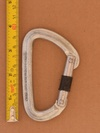 | Black Diamond Quicksilver2 Straight Gate v4 | asymmetric D | n/a | n/a | basic straightgate |
| 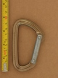 | Black Diamond Quicksilver2 Straight Gate v5 | asymmetric D | n/a | n/a | classic workhorse straightgate |
 | Black Diamond Quicksilver2 screwgate | asymmetric D | manual | gate stopped | with enduro & positron screwlocks demonstrates evolution of BD compact lockers |
| 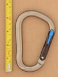 | Black Diamond RockLock Magnetron v1 | HMS | full-auto | simul-press | magnetic simul-locking, symmetric locking system |
 | Black Diamond RockLock Magnetron v2 | HMS | full-auto | simul-press | magnetic simul-locking, symmetric locking system |
 | Black Diamond RockLock Screwgate (dot-peened batch #) | HMS | manual | gate stopped - snap-ring | BD's standard full-sized HMS |
| Black Diamond RockLock Screwgate (laser batch #) | HMS | manual | gate stopped - snap-ring | BD's standard full-sized HMS |
 | Black Diamond Superlock (prototype) | asymmetric D | assisted | lift-and-twist | prototype model of the innovative BD Autolocker |
| 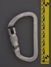 | Black Diamond Superlock (25kN) (v2) | asymmetric D | assisted | lift-and-twist | basic twistlock plus manually activated secondary autolock |
 | Black Diamond Superlock (27kN) (v3) | asymmetric D | assisted | lift-and-twist | basic twistlock plus manually activated secondary autolock |
| 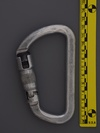 | Black Diamond Superlock (28kN) (v1a) | asymmetric D | assisted | lift-and-twist | basic twistlock plus manually activated secondary autolock |
| Black Diamond Superlock (28kN) (v1b) | asymmetric D | assisted | lift-and-twist | basic twistlock plus manually activated secondary autolock |
 | Black Diamond The Fin (black) | bent spine | n/a | n/a | BD's first hot-forged carabiner, patented finger grip |
 | Black Diamond The Fin (bright) | bent spine | n/a | n/a | BD's first hot-forged carabiner, patented finger grip |
 | Black Diamond The Fin (factory second) | bent spine | n/a | n/a | BD's first hot-forged carabiner, patented finger grip |
 | Black Diamond VaporLock v1 | HMS | manual | gate stopped | ultralight HMS carabiner |
| Black Diamond VaporLock v2 | HMS | manual | gate stopped | ultralight HMS carabiner |
| 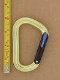 | Black Diamond VaporLock Magnetron (v1) | HMS | full-auto | simul-press | magnetic simul-locking, light HMS carabiner |
| 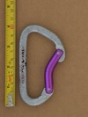 | BlueWater (omegalight D) (bent gate) | asymmetric D | n/a | n/a | mid '90s quickdraw carabiner |
| 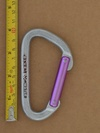 | BlueWater (omegalight D) (straight gate) | asymmetric D | n/a | n/a | mid '90s quickdraw carabiner |
| 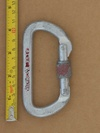 | BlueWater (screwlock D) (plain finish) | D | manual | nose stopped - longitudinal interferance | basic whitelabel screwlocker |
| 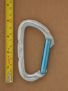 | BlueWater (solid D) | asymmetric D | n/a | n/a | basic solid gate |
 | BlueWater (wire D) | asymmetric D | n/a | n/a | budget wiregate |
 | Buckingham Ox Block | other | n/a | n/a | pulley with integrated carabiner becket and swivel |
 | CAMP Clip Screwgate | asymmetric D | manual | gate stopped | budget screwgate |
| 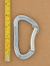 | CAMP (compact S-spine) (bent gate) | S-spine | n/a | n/a | mild s-bend spine |
 | CAMP (light compact d) | asymmetric D | n/a | n/a | 40 gr carabiner from the pin & notch era |
 | CAMP Calypso Bent Gate | bowed spine | n/a | n/a | 2000's bowed-spine bent gate |
 | CAMP Dyon | swept spine | n/a | n/a | unique keylock wiregate |
 | CAMP HMS (Bet Climb) | HMS | manual | gate stopped - unknown | reverse notch & pin snagless nose |
 | CAMP Multi-Use BET (Bent Gate) | asymmetric D | n/a | n/a | reverse notch & pin snagless nose |
 | CAMP Multi-Use BET (Bent Gate) (scalloped) | asymmetric D | n/a | n/a | reverse notch & pin snagless nose |
| 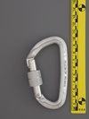 | CAMP Orbit Screw Lock (square knurling) | asymmetric D | manual | gate stopped - gate stop | compact locker |
 | CAMP Orbit Twist Lock (wide square knurling) | asymmetric D | full-auto | twist | compact autolocker |
 | CAMP Photon Lock | asymmetric D | manual | gate stopped - unknown | high-quality lightweight screwlocker |
 | CAMP STEELKAR BENT GATE | asymmetric D | n/a | n/a | demonstrates wiregate weakness |
| CMC (accessory carabiner) | asymmetric D | n/a | n/a | suprisingly featured accessory carabiner |
 | CMC Flash.G Escape Anchor | other | n/a | n/a | escape hook with integrated carabiner for anchor/descent options |
 | CMC Proseries Manual-Lock | asymmetric D | assisted | lower-and-twist | spring-powered manual locking |
| CMC Protech Manual-Lock | asymmetric D | assisted | lower-and-twist | spring-powered manual locking |
 | CMC Protech Manual-Lock w/Keeper | asymmetric D | assisted | lower-and-twist | spring-powered manual locking, removable keeper |
| CMC Stainless Steel ANSI Locking D | asymmetric D | assisted | lower-and-twist | modern ANSI rated stainless steel rescue carabiner |
| CMC Stainless Steel Locking D | asymmetric D | assisted | lower-and-twist | modern stainless steel rescue carabiner |
 | CMI (D) | D | n/a | n/a | basic D from an uncommon carabiner manufacturer |
| CMI Shembiner XL | hook | n/a | n/a | belt mounted tool hook |
| 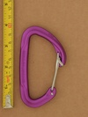 | CT-Climbing Technology Berry W | asymmetric D | n/a | n/a | wire-guarded clean nose wiregate |
| Charlet Moser (asymmetric D) (combo lock) | asymmetric D | manual | twist-twist-twist-slide | combination lock on a full strength carabiner |
 | Chouinard (standard) 1974 | oval | n/a | n/a | vintage carabiner |
| 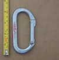 | Chouinard (standard) 1978 | oval | n/a | n/a | vintage carabiner |
 | Chouinard Big D 1983 | asymmetric D | manual | gate stopped - thread runout | threaded sleeve blocks the hinge rather than nose |
 | Chouinard Featherweight 1977 | oval | n/a | n/a | hollow tube carabiner from Chouinard |
| Chouinard Light D Locking 1984 | D | manual | gate stopped - thread runout | threaded sleeve blocks the hinge rather than nose |
 | Chouinard oval 1990 | oval | n/a | n/a | last iteration of the Chouinard oval |
| 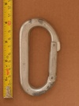 | Chouinard/Salewa (standard) 1972 | asymmetric D | n/a | n/a | vintage chouinard/Salewa carabiner |
 | Climb High-USA (D) | D | n/a | n/a | early milled-nose D |
| 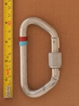 | Climb High-USA (D) (screwlock) | D | manual | gate stopped - thread runout | basic symmetrical d screwlock |
 | Climb High-USA Oval | oval | n/a | n/a | early milled-nose oval |
| 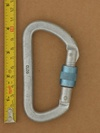 | Clog (Asymmetric D Screwlock) (2800) | asymmetric D | manual | gate stopped - unknown | strong classic Clog screwlock D |
| 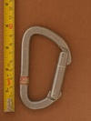 | Clog (Asymmetric D) (2100) | asymmetric D | n/a | n/a | early compact asym'd |
| 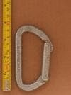 | Clog (Asymmetric D) (2200) v1 | asymmetric D | n/a | n/a | basic asym'd from prolific manufacturer |
| 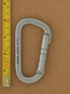 | Clog (Asymmetric D) (2200) v2 | asymmetric D | n/a | n/a | classic compact asymmetric d with large solid gate |
 | Clog (Asymmetric D) (2200) v3 | asymmetric D | n/a | n/a | classic compact asymmetric d with large solid gate |
| 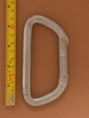 | Clog (Asymmetric D) (3000) | asymmetric D | n/a | n/a | medium sized asym'd from prolific manufacturer |
| 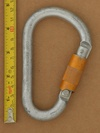 | Clog (HMS) (twistlock) | HMS | full-auto | twist | early twistlock from originator of the twistlock |
 | Clog (OUTSIDE) | asymmetric D | manual | gate stopped - unknown | older screwlock with gate stops |
 | Clog (Oval) (flat profile) | oval | n/a | n/a | vintage oval - flat profile |
| 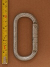 | Clog (Oval) (round profile) | oval | n/a | n/a | vintage oval |
| 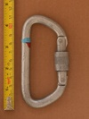 | Clog (Reverse Asymmetric D Screwlock) (2500) | asymmetric D | manual | nose stopped - longitudinal interferance | screwgate with unique lower sleeve stop |
 | Clog (Reverse Asymmetric D) (2500) | asymmetric D | n/a | n/a | basic asym'd from prolific manufacturer |
| 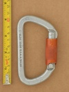 | Clog (twistlock D) (diagonal knurling - 2500) | asymmetric D | full-auto | twist | early twistlock, possibly even the first twistlock model |
 | Clog (twistlock D) (straight knurling 120 deg throw) | asymmetric D | full-auto | twist | early twistlock from originator of the twistlock |
 | Clog (twistlock D) (straight knurling 90 deg throw) | asymmetric D | full-auto | twist | early twistlock from originator of the twistlock |
 | Clog (twistlock HMS) (Climb High) | HMS | full-auto | twist | early twistlock from originator of the twistlock |
| Courant Honos S | asymmetric D | n/a | n/a | rigid plastic belt-mounted racking carabiner |
 | Courant Odin | circle | manual | other stopped | omni-directional semi-permanent ring |
 | DMM Alpha Trad | bent spine | n/a | n/a | snagless bent-spine wiregate |
| DMM Belay Master (v1) | HMS | manual | gate stopped | early belay specific carabiner, side-gate anti-crossload |
 | DMM Belay Master v3 | HMS | manual | gate stopped - gate stop | modern version side-gate anti-crossload carabiner |
 | DMM Big Boa Locksafe | HMS | full-auto | lift-and-twist | large, classic high quality triple-action |
 | DMM Big Boa Screwlock | HMS | manual | gate stopped - gate stop | large 2000's screwlock |
| DMM Boa Locksafe | HMS | full-auto | lift-and-twist | early triple-action carabiner |
| DMM Captive Eye Keylock Screwgate | other | manual | gate stopped - gate stop | captive eye screwgate carabiner |
| 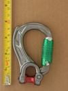 | DMM Director Yoke Locksafe Rope Spacer | asymmetric D | full-auto | twist-lift-twist | full featured quad-lock termination carabiner with interchangable eye and basket spur |
 | DMM Eclipse (Bent Gate) | asymmetric D | n/a | n/a | full-sized bent-gate climbing carabiner |
 | DMM Gym Draw Carabiner | asymmetric D | n/a | n/a | steel carabiner for fixed quickdraws |
| DMM Klettersteig Alloy Anti-Vibe Screwgate | asymmetric D | manual | gate stopped - gate stop | anti-vibration screwlock resists accidental opening |
| DMM Mamba (Screwgate) | asymmetric D | manual | gate stopped - gate stop | first hot-forged carabiner & captive eye for webbing |
| DMM Micro Vault Silver | asymmetric D | manual | gate stopped - gate stop | 3kN belt-mounted micro carabiner |
| DMM Phantom Screwgate | asymmetric D | manual | gate stopped - gate stop | ultralight, ultracompact locker |
| 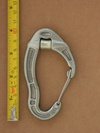 | DMM Revolver v2 | asymmetric D | n/a | n/a | the original integral pulley carabiner |
 | DMM Revolver Screwgate v1 | S-spine | manual | gate stopped - gate stop | screwgate version of the original integral pulley carabiner |
 | DMM Scaffolder | S-spine | full-auto | twist | extra large aluminum carabiner for use on ladders and scaffolds |
 | DMM Shadow Bent Gate | asymmetric D | n/a | n/a | hot-forged gate |
 | DMM Ultima Scaffold Hook ANSI Kwiklock | S-spine | full-auto | twist | extra large aluminum carabiner for use on ladders and scaffolds |
 | DMM Ultra O Durolock | oval | full-auto | twist-lift-countertwist | dual-sleeve quad action |
 | DMM Ultra O Locksafe v1a | oval | full-auto | twist-lift-twist | single-sleeve quad action |
 | DMM Ultra O Locksafe v1b | oval | full-auto | twist-lift-twist | twist-lift-twist-open quad action |
 | DMM Vault Lock | asymmetric D | manual | twist | manual twist-lock 3kN MBS belt clamped racking carabiner |
| DMM Vault Wire | asymmetric D | n/a | n/a | 3kN MBS all metal belt clamped racking carabiner |
 | DMM Wirelock | asymmetric D | n/a | n/a | reverse keylock twisted wiregate |
 | DMM XSRE Lock Captive Bar | asymmetric D | manual | gate stopped - gate stop | 4kN high quality accessory carabiner |
 | EIGER USA D | D | n/a | n/a | vintage D |
| EIGER USA Locking D | D | manual | gate stopped - gate stop | vintage locking carabiner |
 | EIGER USA Oval | oval | n/a | n/a | somewhat common vintage carabiner |
 | EVER NEW (PIONEER) | D | n/a | n/a | carabiner by iconic japanese brand |
 | Edelrid (HMS) | HMS | manual | gate stopped | basic hot forged HMS |
| Edelrid HMS Bulletproof Belay FG Eco | S-spine | full-auto | slide | steel wear-insert, wire keeper + gate spur |
 | Edelrid Nineteen G | swept spine | n/a | n/a | ultra-light full-strength carabiner |
| Edelrid Oval Power 2500 Permalock | offset oval | assisted | gate stopped - gate stop | multi-stage screw lock: button + screw lock |
 | Edelrid Pure Screw Locking | asymmetric D | manual | gate stopped | screwlock version of Pure Slide |
 | Edelrid Pure Slide Carabiner | asymmetric D | full-auto | slide | slidelock mechanism |
| Edelrid SM Clip v1 | asymmetric D | n/a | n/a | compact tool carabiner |
 | Edelweiss / Kong (large D) | asymmetric D | manual | gate stopped - thread runout | Kong produced carabiner for Edelweiss |
 | Foin D Screwgate | D | manual | nose stopped - longitudinal interferance | prominent nose-stop & lathe-turned lower gate stop |
 | GOIS 3/4" Snap Ring | HMS | n/a | n/a | massive slide-gated hook for industrial marine use |
| 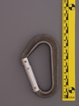 | Gerry (asymmetric d) (T-beam) | asymmetric D | n/a | n/a | historic carabiner from the maker of the first asymmetric d carabiners |
| Glacier Black Big Tony HMS | HMS | manual | gate stopped - unknown | budget HMS |
| Glacier Black Revolve | asymmetric D | manual | gate stopped - unknown | budget integrated pulley carabiner |
 | GrandWall Equipment Brasovia Standard BentGate | asymmetric D | n/a | n/a | dirtbag priced no-frills carabiner |
 | Grivel Clepsydra S v1 | hourglass | full-auto | multi-gate | double-gate belay carabiner |
 | Grivel Plume G | asymmetric D | full-auto | multi-gate | double-gate compact carabiner |
 | Grivel Plume HMS | HMS | full-auto | multi-gate | micro HMS double-gate carabiner |
| Grivel Plume Nut | asymmetric D | manual | gate stopped - gate stop | ultralight ultracompact screwlocker |
 | Grivel Steel Two | asymmetric D | n/a | n/a | steel carabiner for permanent quickdraws |
 | Grivel Tau T | S-spine | full-auto | multi-gate | external spring, semi-locking carabiner |
 | Grivel VLAD Twin Gate | other | full-auto | multi-gate | integral rigging plate, multigate |
 | Hugh Banner (HMS Screwgate) | HMS | manual | gate stopped - machined shoulder stop | late 20th century screwlock |
| Hugh Banner HB 11mm Autolock (Captive Pin) | asymmetric D | full-auto | twist | 30kN captive pin twistlock |
 | Hugh Banner HB HMS Autolock | HMS | full-auto | twist | 1990's twistlock |
 | ISC KH255 Swivel Eye (cap screw) | asymmetric D | full-auto | lift-and-twist | early intergrated-swivel carabiner |
| ISC Offset Oval Karabiner | offset oval | full-auto | lift-and-twist | aluminum offset oval for professional work |
 | ISC SH903 | asymmetric D | full-auto | press-and-press | early triple action carabiner snaphook |
| 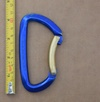 | KONG BONAITI (bent gate) | asymmetric D | n/a | n/a | basic keylock bent gate |
 | KONG Helium (bentgate) | asymmetric D | n/a | n/a | lightweight micro carabiner |
 | KONG Mini D | asymmetric D | n/a | n/a | quality rated keylock accessory carabiner |
| KONG Ovalone Twistlock | offset oval | full-auto | twist | industrial rope access carabiner, part of a manufacturered back-up system |
 | Kaya K-1 | hook | manual | nose stopped | aluminum gated-hook (not a snap-hook) with captive eye |
| 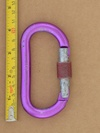 | Kong (Offset Oval Screwlock) (Patent Gate Stamp) | offset oval | manual | gate stopped - thread runout | late 90's keylock oval |
| 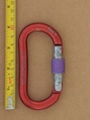 | Kong (Offset Oval Screwlock) (Patent Spine Stamp) | offset oval | manual | gate stopped - thread runout | late 90's keylock oval |
 | Kong Ergo Open Latch | S-spine | n/a | n/a | gate hold open & lock-under-load features |
 | Kong FROG MY 2021 | fork | assisted | multi-gate | push to clip multi-gate mechanism |
 | Kong FROG 360 | fork | assisted | multi-gate | push to clip multi-gate mechanism, textile friendly swivel |
 | Kong FrOG (EXPERIMENT) | fork | assisted | multi-gate | push to clip multi-gate mechanism, developmental pre-production experiment |
 | Kong HMS (Autoblock) | HMS | full-auto | lift-and-twist | keylock autolocker with dot peened Kong logo |
 | Kong HMS 786 (VN) | HMS | full-auto | twist-lift-twist | quad lock, brass locking sleeve |
 | LAPRADE MONTAGNE (asym'd screwlock) | asymmetric D | manual | gate stopped - unknown | textured spine grip, slanted gate top |
 | Latok (asymmetric d) | asymmetric D | n/a | n/a | lightweight compact carabiner from historic brand |
| Latok (rated accessory) (650 dan) | asymmetric D | n/a | n/a | early rated accessory carabiner |
| 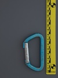 | Latok / Faders (compact D) (1700 kg) | asymmetric D | n/a | n/a | early lightweight compact carabiner |
 | Liberty Mountain D | D | manual | gate stopped | basic symmetrical d |
 | Liberty Mountain Steel D Keylock | HMS | manual | gate stopped | typical modern steel screwlock with keylock nose |
| 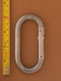 | Liberty USA O | oval | n/a | n/a | somewhat common vintage carabiner |
 | Lowe-CAMP (Snagless D) | asymmetric D | n/a | n/a | snagless nose, interior relieved spine for wider gate opening |
| 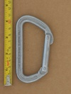 | MSR D I-biner | asymmetric D | n/a | n/a | MSR brand (known now for camping stoves) |
| MSR Locking D I-biner | asymmetric D | manual | gate stopped - unknown | MSR brand (known now for camping stoves) |
 | MSR Oval I-biner | offset oval | n/a | n/a | MSR brand (known now for camping stoves) |
 | Mad Rock Gemini | other | manual | gate stopped | unique twin compartment carabiner design with directionally interlocked gates |
 | Mad Rock Trigger Wire | asymmetric D | n/a | n/a | gate hold-open trigger mechanism |
| Mammut Bionic Crosslock | HMS | full-auto | lift-and-twist | bi-directional internal gate |
 | Mammut Bionic HMS | HMS | manual | gate stopped | early webbed I-beam, hourglass sleeve |
| Mammut Bionic HMS Twistlock | HMS | full-auto | twist | early webbed I-beam, hourglass sleeve |
 | Mammut Bionic Wiregate v3 | swept spine | n/a | n/a | webbeed I-beam carabiner, textured swept spine |
 | Mammut Classic Screwgate | asymmetric D | manual | gate stopped | basic screwgate with milled nose |
| 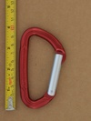 | Mammut Element Keylock | asymmetric D | n/a | n/a | Quality 2000's keylock, whitelabel production |
 | Mammut HMS (Boa) | S-spine | manual | gate stopped - thread runout | high-quality whitelabel HMS made by DMM |
| Mammut Mini Biner Bionic | swept spine | n/a | n/a | modeled after Mammut's full sized Bionic carabiner |
 | Mammut Smart HMS v1 | HMS | manual | gate stopped | side gate provides anti-crossload & anti-unlock |
 | Metolius Bravo Locker | asymmetric D | manual | gate stopped | finely threaded sleeve |
 | Metolius Element Belay Carabiner (large markings) (24 kN) | HMS | manual | gate stopped | finely threaded sleeve, symmetric HMS |
 | Metolius Element Locker (small markings) (24 kN) | HMS | manual | gate stopped | finely threaded sleeve, symmetric HMS |
 | Metolius Gatekeeper Screwlock | asymmetric D | manual | gate stopped | gated captive end, fine threading |
| Metolius Rig Auto Lock | HMS | full-auto | lift-and-twist | large Metolius carabiner |
| 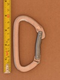 | Metolius X-Comp bent gate | asymmetric D | n/a | n/a | interesting nose design |
| 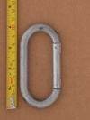 | Midwest Mountaineering Oval | oval | n/a | n/a | classic oval from a classic retailer |
| Ocun Condor HMS Screw | hourglass | manual | gate stopped - thread runout | internal wiregate hourglass screwlock |
| Omega (UL Classified D) (black) | D | manual | gate stopped | Full NFPA G rated carabiner - 72 kN |
 | Omega (locking D) | D | manual | nose stopped - longitudinal interferance | basic nose-stopped screwlocking D |
| 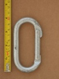 | Omega (oval) v1 | oval | n/a | n/a | early oval from a budget brand |
| 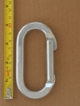 | Omega (oval) v2 | oval | n/a | n/a | basic oval |
 | Omega 08 | D | manual | gate stopped | half-inch steel barstock D |
 | Omega 11 | asymmetric D | full-auto | twist | economical steel auto-lock |
 | Omega 99 | asymmetric D | full-auto | twist | economical steel auto-lock |
| 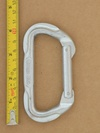 | Omega Pacific (D) | D | n/a | n/a | 34kN cold-forged D |
 | Omega Pacific (Oval) (v1) | oval | n/a | n/a | standard 1990s oval |
 | Omega Pacific Classic Bent Gate | asymmetric D | n/a | n/a | inexpensive basic carabiner, flat-spun rivets may have issues |
 | Omega Pacific Classic Straight Gate | asymmetric D | n/a | n/a | inexpensive basic carabiner, flat-spun rivets may have issues |
 | Omega Pacific Doval | D | n/a | n/a | worst features of both a D and an oval |
| 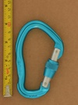 | Omega Pacific Five-O Locking Gate (forged markings) | S-spine | manual | gate stopped - gate stop | Omega Pacific's flagship carabiner in the early 2000's |
 | Omega Pacific JC (long split) | swept spine | n/a | n/a | unique cold-forged split-spine construction |
| 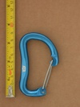 | Omega Pacific JC (short split) | swept spine | n/a | n/a | unique split-spine cold-forged construction |
| 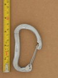 | Omega Pacific JC (no CE) (long split) | swept spine | n/a | n/a | unique cold-forged split-spine construction |
 | Omega Pacific Jake Keylock Screw Lock | HMS | manual | gate stopped - thread runout | last iteration of this iconic HMS carabiner |
 | Omega Pacific Jake Quik-Lok | HMS | full-auto | twist | classic HMS with offset gate in twist lock |
 | Omega Pacific Jake Screw-Lok | HMS | manual | nose stopped | classic HMS, offset gate |
| 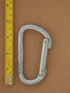 | Omega Pacific Omegalite | asymmetric D | n/a | n/a | small diameter roundstock minimizes weight, unusual crossload prone nose |
 | Omega Pacific Omegalite 3 Bent Gate | asymmetric D | n/a | n/a | prominent nose & fractional strength rating |
 | Omega Pacific Standard Locking D | D | manual | gate stopped | symmetric D |
 | Omega Pacific Standard Oval (v2) | oval | n/a | n/a | overbuilt oval |
 | Omega Pacific Standard Oval Locking | oval | manual | gate stopped | overbuilt oval |
| Pensafe A847PS Locksafe | asymmetric D | full-auto | lift-and-twist | clone of a DMM professional carabiner |
 | Petzl Am'D Ball Lock (metal sleeve v1) | asymmetric D | full-auto | press-and-twist | press-and-twist unlock |
| Petzl Am'D Ball Lock (metal sleeve v1b) | asymmetric D | full-auto | press-and-twist | press-and-twist unlock |
| Petzl Am'D Ball Lock (plastic sleeve v1) | asymmetric D | full-auto | press-and-twist | plastic sleeve button-lock |
| Petzl Am'D Ball Lock (plastic sleeve v2) | asymmetric D | full-auto | press-and-twist | plastic sleeve button-lock |
| Petzl Am'D Ball Lock (plastic sleeve v2b gold) | asymmetric D | full-auto | press-and-twist | plastic sleeve button-lock |
 | Petzl Am'D Pin Lock | asymmetric D | full-auto | press-and-twist | requires tool to unlock |
 | Petzl Am'D Spinball | asymmetric D | assisted | press-and-twist | manual version of ball-lock |
 | Petzl Am'D Triact v1 (gold) | asymmetric D | full-auto | lift-and-twist | classic triple-action |
 | Petzl Ange S | asymmetric D | n/a | n/a | unique reverse-keylock gate with hidden spring |
 | Petzl Attache v1 | HMS | manual | gate stopped | iconic HMS design |
 | Petzl Attache 3D Universo | HMS | manual | gate stopped | belay device retainer and prominent gate-stop |
 | Petzl Caritool v1 | asymmetric D | n/a | n/a | the original one-piece harness mounted tool carabiner |
 | Petzl Caritool L v2 | asymmetric D | n/a | n/a | 2nd gen large one-piece harness mounted tool carabiner |
 | Petzl Caritool S v2 | asymmetric D | n/a | n/a | 2nd gen one-piece harness mounted tool carabiner |
| Petzl Freino v1a | asymmetric D | full-auto | twist | integrated braking spur for additional friction while rappelling/lowering |
| Petzl Freino v1b | asymmetric D | full-auto | twist | integrated braking spur for additional friction while rappelling/lowering |
| Petzl Oxan TLA | offset oval | full-auto | lift-and-twist | ANSI rated gate, steel offset oval |
 | Petzl Spirit v1a | asymmetric D | n/a | n/a | early keylock design, classic carabiner model |
 | Petzl Spirit v1b | asymmetric D | n/a | n/a | classic keylock climbing carabiner |
 | Petzl Spirit Bent Gate (I-beam) | asymmetric D | n/a | n/a | update of a classic design |
 | Petzl Spirit Bent Gate (Skeletonized I-beam) | asymmetric D | n/a | n/a | skeletonized I-beam |
 | Petzl Spirit Screw Lock (v2) | asymmetric D | manual | gate stopped | slick, well designed compact locking carabiner |
| Petzl Spirit Straight Gate (I-beam) | asymmetric D | n/a | n/a | update of a classic design |
| Petzl Spirit Straight Gate (Skeletonized I-beam) | asymmetric D | n/a | n/a | skeletonized I-beam |
| Petzl Vertigo Wire-Lock v1 | asymmetric D | full-auto | slide | slidelock for via ferrata and zipline trolley |
 | Petzl Vertigo Wire-Lock v2 | asymmetric D | full-auto | slide | slidelock, via ferrata |
| Petzl William Ball Lock (metal sleeve b) | HMS | full-auto | press-and-twist | excellent large HMS auto-locker in gold |
 | Petzl William Ball Lock (metal sleeve) | HMS | full-auto | press-and-twist | excellent large HMS auto-locker |
 | Pierre Allain (asymmetric D) | asymmetric D | n/a | n/a | gate made from tubing, from an early carabiner manufacturer |
 | Pierre Allain (asymmetric D) (alt) | asymmetric D | n/a | n/a | gate made from tubing, from an early carabiner manufacturer |
 | Pierre Allain (asymmetric D) (anodized gate) | asymmetric D | n/a | n/a | anodized gate made from tubing, from an early carabiner manufacturer |
 | Pierre Allain (latchless) (v1) | asymmetric D | n/a | n/a | non-load-bearing gate, early design |
 | Pierre Allain (latchless) (v1b) | asymmetric D | n/a | n/a | non-load-bearing gate, early design |
 | Pierre Allain (latchless) (v2) | asymmetric D | n/a | n/a | non-load-bearing gate, early design |
 | Pierre Allain (latchless) (v2b) | asymmetric D | n/a | n/a | non-load-bearing gate, early design |
| Proclimb USR-106-A3T | asymmetric D | full-auto | lift-and-twist | heavy, whitelabel cheap autolocker |
| REI (asymmetric D - locking carabiner) | asymmetric D | manual | gate stopped - gate stop | screwlocker with unique extruded aluminum sleeve |
| REI (locking d) v1 | D | manual | nose stopped | inexpensive locking D from a transitional period of carabiners |
| REI (locking d) v2 | D | manual | nose stopped | demonstrates changes in ratings and markings over v1 |
| REI (oval) (milled nose) | oval | n/a | n/a | vintage bent/milled oval |
 | REI Classic D | asymmetric D | n/a | n/a | economical asymmetric d |
| REI Classic Oval | offset oval | n/a | n/a | whitelabel production |
| REI Gold D v1 | asymmetric D | n/a | n/a | REI carabiner with dot-peened markings on the gate and only 21 kN rating |
 | REI Gold D v2 | asymmetric D | n/a | n/a | REI carabiner with dot-peened markings on the gate |
| REI Gold D v2 (purple) | asymmetric D | n/a | n/a | REI carabiner with dot-peened markings on the gate, bright purple anodization |
| REI Gold D Locking Carabiner v1 | asymmetric D | manual | gate stopped - thread runout | Green is Go locking indicator |
 | REI Gold D Locking Carabiner v2 | asymmetric D | manual | gate stopped - unknown | Green is Go locking indicator |
 | REI Gold Oval | offset oval | n/a | n/a | REI carabiner with dot-peened markings on the gate |
 | REI HMS Screwgate | HMS | manual | nose stopped | REI branded carabiner |
 | Rock Exotica Pirate | HMS | full-auto | lower-and-twist | lower-and-twist to unlock, offset gate |
| Rock Exotica Transporter | asymmetric D | manual | press-and-slide | two position manual slide lock, all metal belt-mounted accessory hook |
 | Rock Exotica rockD Auto-lock | asymmetric D | full-auto | lower-and-twist | lower-and-twist to unlock |
 | Rock Exotica rockD ORCA | asymmetric D | assisted | lift-and-twist | assisted auto-locking |
 | Rock Exotica rockO ORCA | oval | assisted | lift-and-twist | assisted auto-locking |
 | Royal Robbins / Salewa (hollow oval) (v1) | oval | n/a | n/a | hollow - constructed from tubing not solid aluminum rod |
 | Royal Robbins / Salewa (hollow oval) (v2) | oval | n/a | n/a | hollow - constructed from tubing not solid aluminum rod |
 | Royal Robbins / Salewa (hollow oval) (v3) | oval | n/a | n/a | hollow - constructed from tubing not solid aluminum rod |
| Royal Robbins / Salewa (oval) (long hinge) | oval | n/a | n/a | vintage oval |
 | Royal Robbins / Salewa (oval) (short hinge) | oval | n/a | n/a | vintage oval |
 | SMC D Locking v1 | D | manual | nose stopped - longitudinal interferance | vintage screw locker from an era when lockers were a luxury |
| SMC D Locking v2 | D | manual | other stopped | bi-directional locking due to full length thread |
 | SMC D Locking v3 | D | manual | nose stopped | budget screw locker from an era when lockers were a luxury |
 | SMC Oval v1 (Orange) | oval | n/a | n/a | early unrated milled-nose oval in orange anodization |
 | SMC Oval v2 | oval | n/a | n/a | early unrated stamped-nose oval |
 | Salewa (Hollow D) (black/gold) | D | n/a | n/a | hollow - constructed from tubing not solid aluminum rod |
 | Salewa (Hollow D) (short hinge) | D | n/a | n/a | hollow - constructed from tubing not solid aluminum rod |
| Salewa Hot | asymmetric D | n/a | n/a | 2000's workhorse carabiner from an old brand |
| Simond Cliff | asymmetric D | n/a | n/a | classic Simond asym'd |
 | Simond Cliff Express | asymmetric D | n/a | n/a | unique finger grip facilitates gate opening |
 | Simond Spider Bent Gate | asymmetric D | n/a | n/a | proprietary reverse keylock (Simond monobloc) |
 | Simond Spider Straight Gate | asymmetric D | n/a | n/a | proprietary reverse keylock (Simond monobloc) |
| Skylotec FS 64 ALU | hook | full-auto | press | aluminum scaffold hook with a ANSI rated gate |
| Skylotec HMS Double Tri 2.0 | HMS | full-auto | lift-and-twist | unique bi-directional twist |
| Skylotec passO Double Tri | HMS | full-auto | lift-and-twist | unique bi-directional twist |
 | Slack-Inov Vortex 2 | circle | n/a | n/a | gated rope thimble for highline tether |
 | Slackit SRL Rollex C | bent spine | n/a | n/a | becketed webbing pulley carabiner for slacklines |
| Sterling (unknown/unreleased) | other | full-auto | lift-and-twist | prototype captive eyes design - possibly for adjustable lanyard |
| Stubai (1990 T-beam) | asymmetric D | n/a | n/a | lightweight asymmetric D |
| Stubai (HMS twistlock w/ manual lock) | HMS | assisted | lift-and-twist | auto twistlock with manual secondary lock |
 | Stubai (HMS twistlock) | HMS | full-auto | twist | bronze sleeved twistlock HMS |
 | Stubai (HMS) | HMS | manual | gate stopped - gate stop | HMS carabiner with a notch & (windowed) hole gate latch |
| Stubai 3-D Ultralight | other | n/a | n/a | unique twisted design, notched nose, and pinless/windowed gate |
 | Stubai Asymmetric Type D | asymmetric D | manual | nose stopped - longitudinal interferance | clawlock nose, nose-stopped locking sleeve |
| Stubai EASY CLIP Bent Gate | asymmetric D | n/a | n/a | snagless clawlock nose |
 | Stubai EASY CLIP Straight Gate | asymmetric D | n/a | n/a | snagless clawlock nose |
| Stubai Genius | other | n/a | n/a | gate hold-open mechanism, stamped flat body |
 | Stubai ROCK CLIP Bent Gate | asymmetric D | n/a | n/a | snagless clawlock nose |
 | Stubai ROCK CLIP Straight Gate | asymmetric D | n/a | n/a | snagless clawlock nose |
 | Surety (RCC645 95B) | HMS | full-auto | twist | steel industrial twist-lock |
 | Trango (bright wiregate) (24kn) | asymmetric D | n/a | n/a | whitelabel carabiner produced for Trango |
| Trango (standard bent gate) | asymmetric D | n/a | n/a | mid-1990's bent gate |
 | Trango Accessory Wire | asymmetric D | n/a | n/a | quality accessory wiregate |
| Trango React Screwlock | asymmetric D | manual | gate stopped - gate stop | quality budget keylock screwgate |
| Trango SuperFly Screwlock | asymmetric D | manual | gate stopped - unknown | lightest locker available in 2005 |
| Trango WideBody Screwlock | S-spine | manual | gate stopped - thread runout | S-spine HMS circa 1999 |
| US AMF81 | oval | n/a | n/a | US Government steel carabiner |
| Unmarked (123 smooth) | asymmetric D | n/a | n/a | unknown 10mm steel non-locker |
 | Unmarked (D screwlock) | D | manual | gate stopped - thread runout | early style screwlocker from an unknown brand |
| Unmarked (Oval) (yellow tape) | oval | n/a | n/a | unkown carabiner c. 1950-1960s |
 | Uno (2100) | D | n/a | n/a | japanese simple d |
| Uno (2500) | D | n/a | n/a | japanese simple d |
 | Wild Country EOS | asymmetric D | manual | gate stopped - unknown | modern medium screwlocker with extruded sleeve |
 | Wild Country Helium (v2) | asymmetric D | n/a | n/a | hot-forged hooded wiregate |
 | Wild Country Helium 3.0 | asymmetric D | n/a | n/a | state of the art hot-forged hooded wiregate |
 | Wild Country Microlite (screwlock) | asymmetric D | manual | nose stopped - longitudinal interferance | late 80's lightweight screwlock |
 | Wild Country Neon Screwlock | asymmetric D | manual | gate stopped | an excellent light weight screwlock carabiner |
 | Wild Country Oxygen Bent Gate (v2) | asymmetric D | n/a | n/a | snagless clawlock nose |
 | Wild Country Oxygen Straight Gate (v1) | asymmetric D | n/a | n/a | snagless clawlock nose |
 | Wild Country Oxygen Straight Gate (v2) | asymmetric D | n/a | n/a | snagless clawlock nose |
 | Wild Country USA Almost Oval | offset oval | n/a | n/a | basic D |
 | Wild Country Xenon HMS Tri-Lock Belay | HMS | full-auto | lift-and-twist | autolocking HMS with wire keeper |
 | Woody Valley / CAMP (paragliding carabiner) | trapezoid | full-auto | twist | paragliding carabiner with reverse notch & pin |
 | YOKE N-256G v1 | HMS | full-auto | twist | basic industrial carabiner drilled for anti-crossload pin |
| YOKE N-256G v1b | HMS | full-auto | twist | basic industrial carabiner drilled for anti-crossload pin |
 | ace (asymmetric d) | asymmetric D | n/a | n/a | fractional kN ratings from an uncommon brand |
| ace (locking d) | D | manual | nose stopped - longitudinal interferance | ace + Edelrid carabiner |
 | lucKY (keylock) | asymmetric D | n/a | n/a | twin keylock nose |
 | lucKY Straight Gate v1 | asymmetric D | n/a | n/a | strange nose, uncommon brand |
 | lucKY Straight Gate v2 | asymmetric D | n/a | n/a | strange nose, uncommon brand |
| ИРЕМЕЛЬ (Iremel) 0192/2200 | asymmetric D | manual | gate stopped - gate stop | russian carabiner |